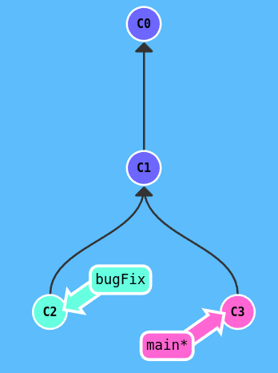
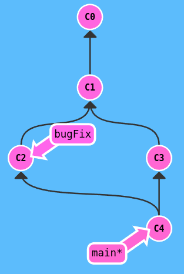
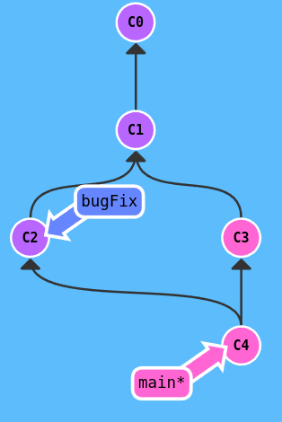
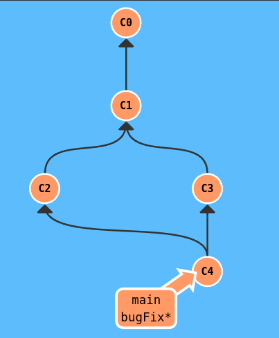

From: Learngitbranching.org To go straight to a sandbox: (https://pcottle.github.io/learnGitBranching/?NODEMO)
Git Commits #
- A commit in a git repository records a snapshot of all the (tracked) files in your directory. It’s like a snapshot of the directory.
- most commits have ancestor commits above them
Branches #
- Branches: pointers to a specific commit and nothing more; says I want to imclude the work of this commit and all parent commits.
Branching and Merging #
- branch off: combining the work from two different branches together.
The first method to branch off is git merge
- Merging creates a special commit that has two unique parents which essentially means **I want to include all the work from this parent over here and this one over here, and the set of all their parents.
- below, two branches with a unique commit which means that neither branch includes the entire set of “work” in the repo that we have done.

- when merge
git merge bugFixintomain,mainnow points to a new commit that has two parents which means thatmaincontains all the work in ther repository now.

- when merge
git merge mainintobugFix,mainnow points to a new commit that has two parents which means thatmaincontains all the work in ther repository now.

And since `bugFix` wan an ancestor of `main`, git simply just moved `bugFix` th the same commit `main` was attached to.
before `git merge main`

after `git merge main`
The second way of combining work between branches is rebasing which essentially take a set of commits, “copies” them, and plops(يسقط) them down somewhere else.
While this sounds confusing, the advantage of rebasing is that it can be used to make a nice linear sequence of commits. The commit log / history of the repository will be a lot cleaner if only rebasing is allowed.